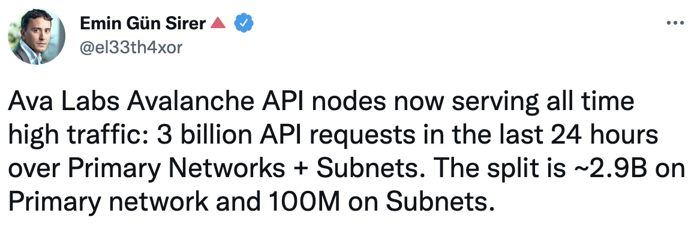
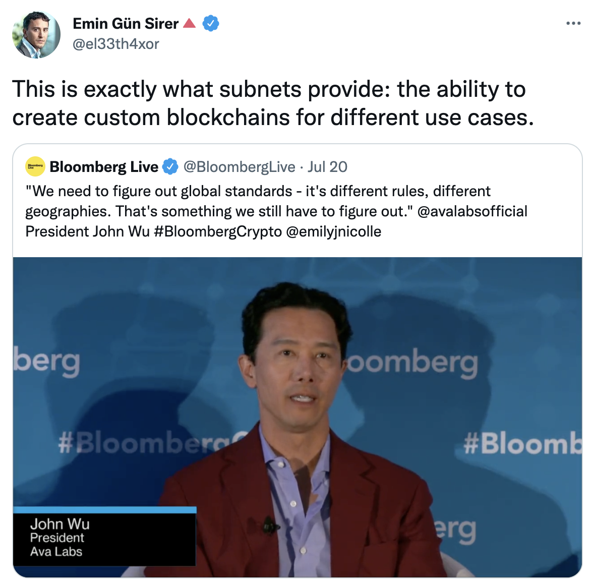

Who am I?
- 이규호
- Gyuho Lee
- Engineer, Ava Labs
- github.com/gyuho
- twitter.com/gyuhox
- telegram/leegyuho
- linkedin.com/in/gyuho
Agenda
- What is Avalanche?
- Avalanche Consensus ☃️
- Avalanche Platform
- Avalanche Subnet üî∫
- Avalanche/Subnet vs. L2
- Roadmap
- Q/A
Slides talk.gyuho.dev/kbw2022.html
What is Avalanche?
Overview
Avalanche ($AVAX)
- Launched in Sep 2020
- Novel Consensus Mechanism (Snowman)
- EVM Friendly
- Fast and Scalable L1 (>2K EVM TPS)
- Reliable (no downtime, no reorg)
- Platform for Deploying Subnets
Ava Labs
- Founded in 2020 by Emin Gün Sirer, ex-Cornell professor, the creator of the first p2p cryptocurrency system in 2003, and Cornell PhDs
Ava Labs builds products and infrastructure that streamline the user experience for web3.
Avalanche Today
>3.6B requests (a day, July 2022) with ~80ms latency

Avalanche Today
Subnet effect -- scales without congestion

Horizontal Scale with Subnets
- Consensus with sub-second finality (Fast)
- Decentralized with >1,300 validators (Secure)
- Subnets for application specific chains (Isolation)
Avalanche Consensus ☃️
Snowman Protocol
Consensus Until Now
Classical (Lamport 1988, Paxos/Raft/etcd)
- Quick finality but does not scale
- Quadratic message complexity
- Permissioned, requires precise membership
Consensus Until Now
Nakamoto (2008, Bitcoin)
- Robust, no need for precise membership
- High latency, low throughput
- Wastes energy, not green, not sustainable
Consensus Until Now
PBFT (1999), HotStuff (Chain BFT 2019)
- Powers many PoS networks (Tendermint, Diem)
- Committee/leader-based
Avalanche Family
- Instant finality, low latency (~1 sec)
- High throughput (>1,500 TPS on EVM, 5K on X-chain)
- Scales >10-million nodes
- Robust, no need for precise membership
- Leaderless
- Quiescent, green, sustainable
- Inspired by epidemic protocols and gossip networks
- New idea: deliberately metastable
Binary Consensus
- Pick one
red /blue -- no correct answer - Adopt the majority color by repeated sub-sampling
- Consensus results in the entire network agreeing on either
red orblue - Even with 50/50 split, random perturbation in the sampling results in a single value being selected


Avalanche Platform
Platform Overview
Primary Network
- X-chain runs on DAG, used for exchanging assets
- P-chain coordinates validators and subnets
- C-chain executes EVM contracts with ETH RPCs
Subnet validator must validate primary network!
Avalanche Subnet üî∫
What is Subnet?
Subnet (sub-network)
Subnet (sub-network)
Custom networks running on Avalanche
- Security: Choose who and how many can participate
- Compliance: Comply with specific industry, jurisdiction, regulatory environment
- Custom Execution: Common VM (subnet-evm with custom gas token), custom VM optimized for own use case (key-value store, gaming)
- Privacy: Controls data visibility (encryption)
Effects of Subnet


Avalanche/Subnet vs. L2
What about L2s? Comparative Analysis
Our Approach for Scalability
Subnets == uniform way of scaling with uniform API
What about sharding?

What about Layer 2s?
- Can Subnet provide its own security? Yes
- Can Subnet rely on shared security? Yes
- Can you build L2 with Subnet? Yes
L2 (rollups) vs. Subnet
Rollup Security + Dispute Resolution: Base blockchain (where security is provided) must be able to execute arbitrary L2 state transitions to resolve disputes.
Subnet: Subnets are sovereign networks and provide their own security. State transitions do not need to be runnable on another (root) blockchain.
L2 (rollups) vs. Subnet
Rollup Fault Isolation: If the root blockchain halts, the L2 cannot finalize data.
Subnet: Subnets are their own networks. If Avalanche halts, Subnets will continue finalizing data independently (they run their own consensus).
L2 (rollups) vs. Subnet
Rollup Time-To-Finality: To ensure there is sufficient time to dispute state roots committed to the root blockchain, finality must be >6 hours (in some cases 7 days).
Subnet: Subnet finality is achieved in sub-second. Subnets use the same consensus engine implementation as the Avalanche Primary Network.
Subnet Security Considerations
- Control key management
- Validator count and reputation
- Data replication and peer count
- Virtual machine correctness
- Subnet Visibility (public or private)
Roadmap
What's Next?
Roadmap
- Permissionless Subnet Staking
- Cross-Subnet Bridging
- New SDKs and VMs (Rust VMs)
Getting started?
- https://avax.network
- avalanche-cli: Launch a subnet in 30-second
Welcome to Multiverse
Avalanche Foundation Launches Incentive Program to Accelerate Growth of Subnets